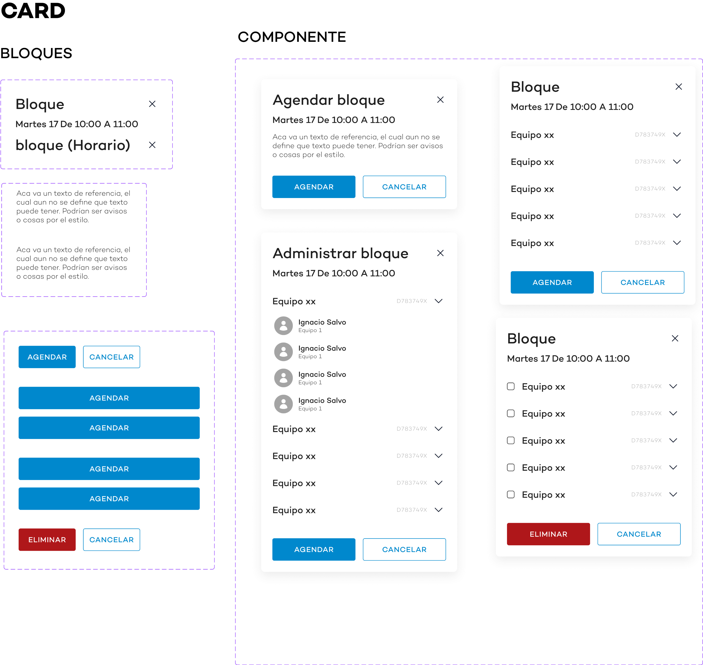

DILAB
DILAB es una aplicación móvil diseñada para permitir a los estudiantes de ingeniería de la UC agendar horas en el laboratorio de prototipados. La plataforma permite agendar, cancelar y gestionar reservas, además de no permitir reservas múltiples en la misma semana y en bloques no permitidos. También incluye una plataforma para el administrador.
Objetivos
- Facilitar la gestión de reservas para el laboratorio de prototipados
- Implementar restricciones de reserva para mejorar la disponibilidad
- Proveer una plataforma de administración eficiente.

Userflow
Se crearon diagramas de flujo de usuario (userflows) para visualizar el recorrido completo de los usuarios dentro de la aplicación, desde el inicio de sesión hasta la finalización de las tareas de picking y armado. Esto permitió identificar puntos de fricción y oportunidades de mejora en la experiencia del usuario.
Wireframing
Se desarrollaron wireframes, que son esquemas visuales de la interfaz de usuario, para definir la estructura y disposición de los elementos en cada pantalla. Los wireframes sirvieron como base para la creación de prototipos y garantizaron una navegación clara y eficiente.
Sistema de Diseño
e estableció un sistema de diseño coherente que incluía una paleta de colores, tipografía, iconos y componentes reutilizables. Esto aseguró una apariencia visual unificada en toda la aplicación y facilitó el proceso de diseño y desarrollo.

Prototipo Alta Fidelidad Móvil
Se creó un prototipo interactivo de alta fidelidad para dispositivos móviles, que simulaba la experiencia real de la aplicación en teléfonos inteligentes y tabletas. Este prototipo permitió a los usuarios probar la aplicación y proporcionar retroalimentación valiosa antes del desarrollo final.
Prototipo Alta Fidelidad Web
Se desarrolló un prototipo de alta fidelidad para la versión web de la aplicación, adaptado a pantallas más grandes y con funcionalidades adicionales. Este prototipo permitió evaluar la usabilidad y la experiencia de usuario en diferentes dispositivos y contextos.